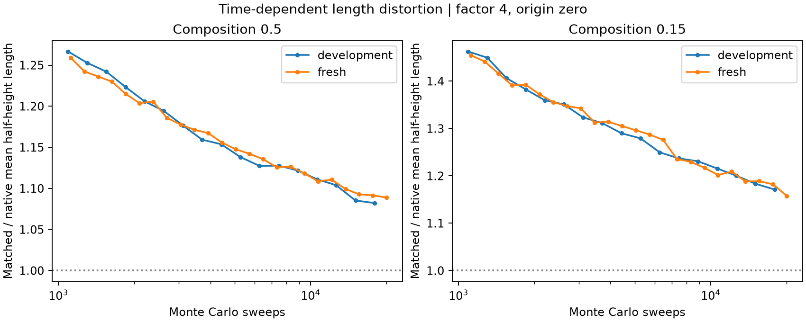
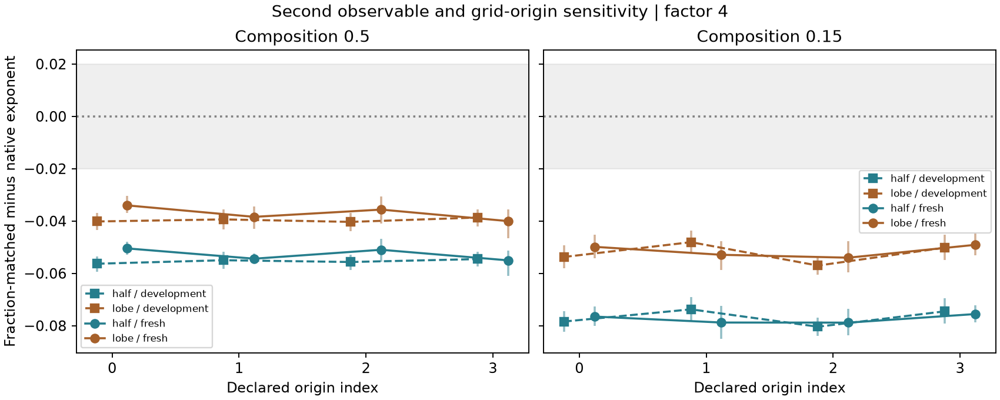

AI-ASSISTED WORKING BRIEF · FOR STUDENT CHECKING AND TECHNICAL CRITICISM
Independent checks of a growth measurement
Question: after reducing the resolution of conserved Kawasaki images, is matching the original composition enough to preserve a finite-window growth estimate? Can fixed resolution warnings identify reliable estimates?
Design: 32 previously analysed development trajectories and 16 fresh, independently seeded L=128 trajectories (eight per composition). The new batch ran to 20,000 sweeps, with the protocol, numerical tolerance and analysis-source hashes fixed before generation. This is a short-window measurement test, not an asymptotic growth-law or finite-size-saturation experiment.
Results that can be checked
| cohort | composition | observable | trajectories | delta | low | high | first_sweep | last_sweep |
|---|---|---|---|---|---|---|---|---|
| development | 0.5 | half | 16 | -0.05632 | -0.059311 | -0.05344 | 1091 | 17913 |
| development | 0.5 | lobe | 16 | -0.040167 | -0.04339 | -0.036928 | 1091 | 17913 |
| development | 0.15 | half | 16 | -0.078413 | -0.082267 | -0.074374 | 1091 | 17913 |
| development | 0.15 | lobe | 16 | -0.053724 | -0.058146 | -0.049169 | 1091 | 17913 |
| fresh | 0.5 | half | 8 | -0.050475 | -0.052929 | -0.047822 | 1119 | 20000 |
| fresh | 0.5 | lobe | 8 | -0.034029 | -0.036985 | -0.030391 | 1119 | 20000 |
| fresh | 0.15 | half | 8 | -0.076511 | -0.080056 | -0.072551 | 1119 | 20000 |
| fresh | 0.15 | lobe | 8 | -0.04986 | -0.054289 | -0.045182 | 1119 | 20000 |
Intervals use 1,000 paired whole-trajectory bootstrap draws. Half-height is primary; positive-lobe integral is a second definition. Neither is a particle radius or a known true exponent.

The changing length ratio accounts algebraically for the exponent shift. That identity is a numerical check, not a novel theory or independent causal explanation.

Do the fixed screens have useful coverage?
| cohort | screen | cases | passes | pass_outside | flagged_within | unknown |
|---|---|---|---|---|---|---|
| development | directional_02_adaptation | 18 | 0 | 0 | 5 | 0 |
| development | observed_three_pixel_screen | 18 | 0 | 0 | 5 | 0 |
| fresh | directional_02_adaptation | 18 | 0 | 0 | 5 | 0 |
| fresh | observed_three_pixel_screen | 18 | 0 | 0 | 5 | 0 |
Zero passes means no useful acceptance coverage, not perfect prediction. Cases share trajectories. The three-pixel screen is a chosen heuristic. The directional .02 screen adapts only part of Ledesma-Alonso et al. (2018); it omits the full set of descriptors and cannot refute their published method. No new diagnostic is validated here.
Materials link and its boundary
The companion applies two length definitions to fixed public 3D Al-Ge masks. It tests static measurement sensitivity, not whether the 2D model predicts real ageing. Native masks are assumed references; sparse phases, sub-voxel lengths and unverified representativeness limit interpretation.
Specific criticism requested
- Does this dynamic, paired benchmark add a useful increment beyond existing image-resolution studies?
- What faithful multi-descriptor comparison and more realistic observation model are needed before claiming a useful diagnostic?
- Is there an owner-defined imaging decision for which this static tool would be worth testing?
Current verdict: reproducible internal evidence, with new-seed replication and a negative screening result. Novelty, publication suitability, outside usefulness and student mastery are not established. No endorsement is implied.